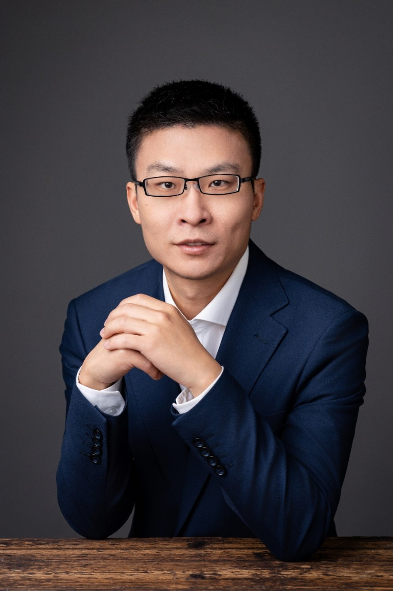
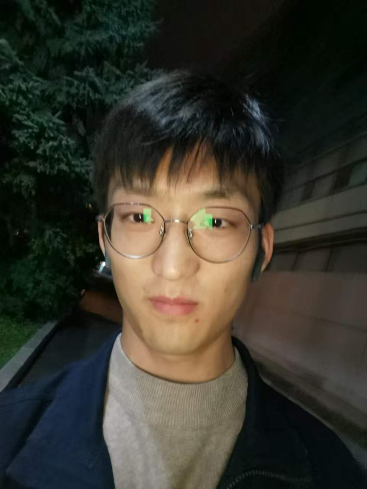
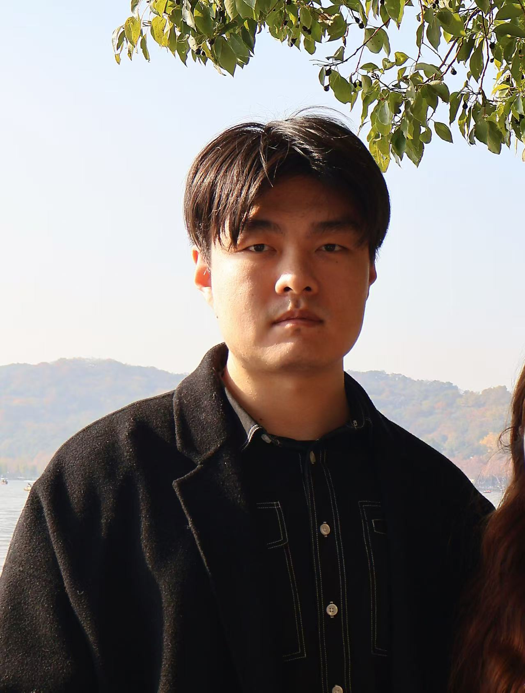
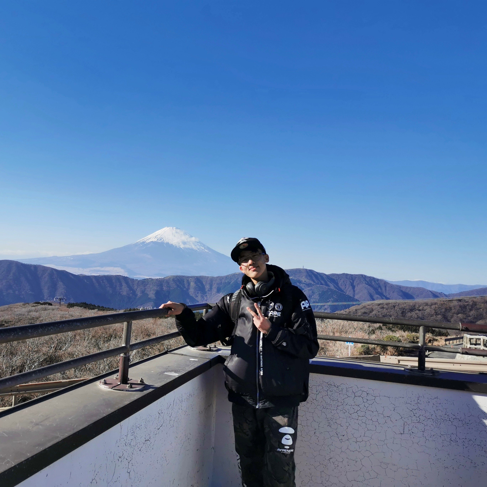
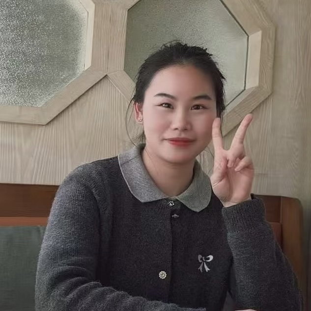
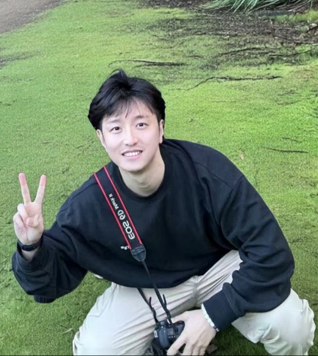
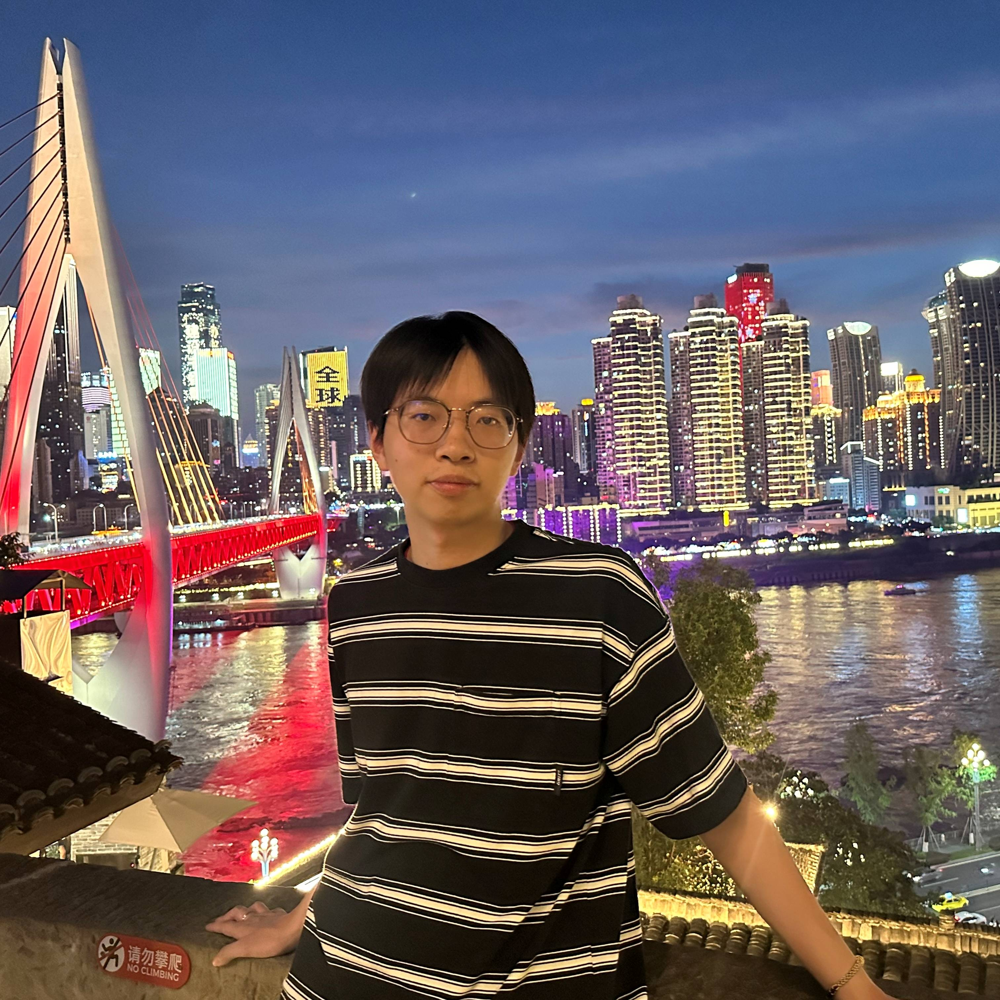

Heterogeneous Synthesis of Fine Chemicals and Polymers from C1 Sources
Developing catalysts and electrochemical systems for coupling carbon and nitrogen feedstocks into value-added products such as urea and amides.
We develop advanced materials, electrochemical platforms, and electrified chemical processes to transform small molecules, renewable feedstocks, and waste resources into fuels, chemicals, and functional materials.
The Yang Research Group focuses on chemistry and materials science that address urgent challenges in carbon neutrality, clean energy conversion, resource circulation, and sustainable manufacturing. We are particularly interested in non-equilibrium catalytic processes, electrified synthesis, and interfacial reaction mechanisms.
Our research emphasizes the integration of advanced catalytic materials, reaction pathways analysis, and innovative reactor designs to address challenges in selectivity, stability, and scalability.
We focus on the design of single-atom catalysts and reaction systems that ensure selective C–Cl bond cleavage, efficient CO₂ utilization, and high product specificity.
This research focuses on mimicking the active site properties of homogeneous catalysts, such as electronic effects and spatial configurations, while optimizing the structure and functionality of polymeric and supported heterogeneous catalysts.
Replace the following cards with your real research directions. The current version is written for a catalysis and materials chemistry group and can be used immediately as a polished first draft.
Developing catalysts and electrochemical systems for coupling carbon and nitrogen feedstocks into value-added products such as urea and amides.
Using Joule heating, pulsed heating, and spatial temperature gradients to enable rapid, selective, and energy-efficient chemical transformations.
Combining spectroscopy, microscopy, electrochemical methods, and kinetic analysis to reveal active phases and reaction pathways.
Our group brings together researchers with backgrounds in catalysis, electrochemistry, materials chemistry, and sustainable chemical engineering.

Prof. Ji Yang leads the Yang Research Group. His research focuses on C1 chemistry, functional upcycling and coupled valorization of plastic waste, and AI-driven catalyst design.
The group aims to develop advanced catalytic systems that integrate catalyst synthesis, mechanistic understanding, interfacial regulation, and device-level translation for sustainable chemical manufacturing and energy conversion.

Ph.D., Jilin University, 2024

M.S., Shanghai University, 2023
M.S., University of Chinese Academy of Sciences, 2024

M.S., Beijing University of Technology, 2024

M.E., East China University of Science and Technology, 2025

M.S., The University of Queensland, 2024

M.S., Shanghai University, 2024